La vidéo de *Pursuing AI* lève le voile sur un modèle d'intelligence artificielle mystérieux et furtif nommé « Space Bunny », rapidement identifié par la communauté comme étant une création de Minimax. Apparu soudainement sur OpenRouter sans documentation officielle, ce modèle surprend par ses performances de pointe, se positionnant d'emblée comme un rival sérieux face à des poids lourds tels qu'Astra et Opus 5.5. Conçu pour générer des environnements complexes, interactifs et dynamiques (comme des étangs de carpes koï, des jardins japonais en voxel ou des scènes côtières animées), Space Bunny repousse les frontières de la génération procédurale et de la 3D assistée par IA à partir de simples instructions textuelles ou de combinaisons texte-image.
L'analyse des démonstrations partagées sur X met en lumière des workflows novateurs où les créateurs testent les limites des modèles dans des conditions variées. Par exemple, pour construire un jardin japonais en Three.js, Space Bunny a nécessité environ 45 minutes pour un rendu gratuit et très étendu, tandis qu'Astra a accompli une tâche similaire en 15 minutes pour un coût de 4,24 dollars. De même, en combinant des prompts textuels et des images de référence, Space Bunny s'est montré capable de synthétiser des micro-mondes animés cohérents — intégrant des trains en mouvement, des PNJ et des variations d'éclairage dynamiques — sans perdre sa direction artistique en pixel art ou en style voxel.
Pour les créateurs de vidéo et les concepteurs d'expériences interactives, ces avancées signalent un changement de paradigme majeur : la capacité à prototyper rapidement des environnements 3D immersifs et dynamiques directement depuis des interfaces d'IA. Toutefois, les analystes appellent à la prudence face aux démos virales. Entre les temps de génération plus longs, l'utilisation d'images de référence masquant une partie de la création de zéro, et l'absence de bancs d'essai standardisés, les créateurs doivent évaluer rigoureusement le compromis entre richesse visuelle, coût temporel et interactivité réelle avant d'intégrer ces outils émergents dans leurs pipelines de production professionnelle.
Bon, c'est vraiment fou. Un modèle d'IA complètement mystérieux vient d'apparaître sur OpenRouter avec presque aucune information à son sujet. Il s'appelle Space Bunny, et c'était censé être un modèle furtif, sauf que la furtivité n'a pas duré très longtemps. Les gens ont commencé à creuser dans le code, et voilà, c'était Minimax.
Interface & Outils : Navigateur web affichant une interface graphique animée (Postcard Radio) puis des publications sur le réseau social X (anciennement Twitter).
Contenu textuel & Code : Image 1 : "PELICAN ON TWO WHEELS", commandes de lecture et de vitesse. Image 2 : "Space Bunny (stealth model) is free for the next week", "- 1M Context", "- Multi-modal", "- Zero Data Retention". Image 3 : Tweet de @LuminaBench avec alerte rouge, mentionnant "The stealth model 'Space Bunny' is officially a MiniMax model", et un bloc de code JSON avec `"provider": "minimax-m3-a-official"`, `"model": "space-bunny"`.
Action / Démonstration : Présentation visuelle successive de l'animation, du tweet annonçant Space Bunny, puis du tweet d'analyse du code révélant l'origine MiniMax.
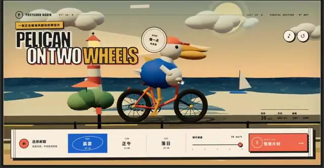
🔍 Agrandir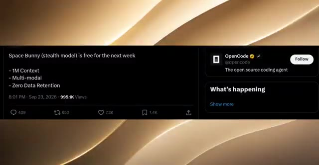
🔍 AgrandirEt ce n'est pas non plus un modèle expérimental aléatoire. Les premiers résultats montrent que Space Bunny rivalise avec des modèles comme Astra et Opus 5.5. Et aujourd'hui, j'ai quelques-uns des premiers résultats les plus fous de ce modèle avant sa sortie officielle. Alors prenez vos chips, installez-vous confortablement, car nous sommes sur le point de découvrir ce que ce modèle mystère peut réellement faire.
Interface & Outils : Capture de post Twitter/X et comparatif visuel côte à côte de rendus graphiques comparant Space Bunny et Grok 4.7.
Contenu textuel & Code : Texte du tweet de Lumina mentionnant MiniMax et "space-bunny", et comparatif étiqueté Space Bunny (MiniMax M3.1) vs Grok 4.7.
Action / Démonstration : Présentation d'une publication sur les réseaux sociaux suivie d'une comparaison visuelle de performances entre modèles d'IA générative 3D.
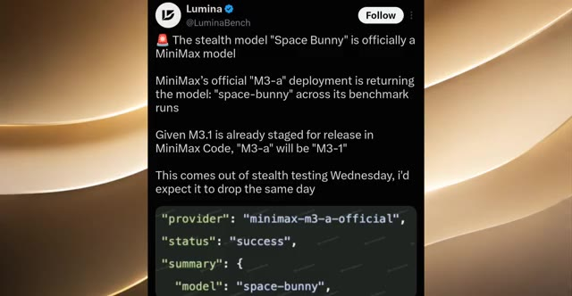
🔍 Agrandir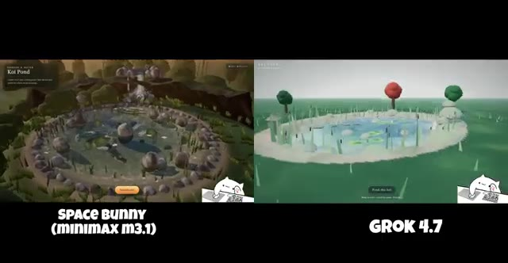
🔍 Agrandir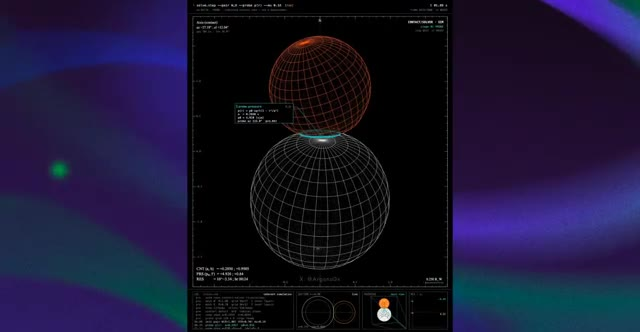
🔍 AgrandirC'est Pursuing AI, et vous regardez le rapport de recherche. D'accord, regardez ça maintenant. C'est l'une des comparaisons qui a commencé à attirer l'attention sur X. À gauche, nous avons Space Bunny, apparemment Minimax M 3.1, et à droite, Grok 4.7, et tous les deux travaillent sur le même concept d'étang à carpes koï.
Interface & Outils : Écran de présentation et de comparaison vidéo côte à côte avec des étiquettes textuelles indiquant les modèles d'IA.
Contenu textuel & Code : Texte à l'écran : "SPACE BUNNY (MINIMAX M3.1)" à gauche et "GROK 4.7" à droite, montrant des rendus 3D interactifs ou des vidéos générées sur le thème d'un étang de koïs ("Koi Pond").
Action / Démonstration : Affichage d'une comparaison comparative de deux modèles de génération vidéo par IA illustrant le même prompt (étang de koïs).
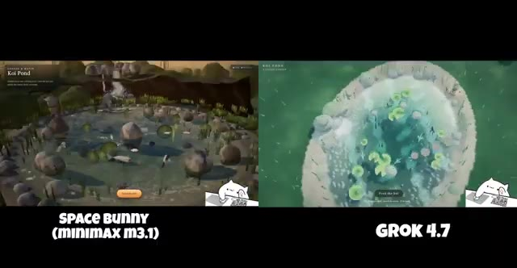
🔍 Agrandir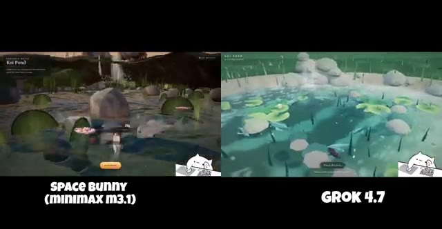
🔍 AgrandirMaintenant, ce qui m'a immédiatement sauté aux yeux, c'est à quel point ces deux rendus sont différents. Space Bunny opte pour un environnement beaucoup plus détaillé, semblable à un jeu vidéo. On peut voir les rochers entourant l'étang, la végétation, l'eau, les petits poissons, les sentiers, et à mesure que la caméra change, la scène donne toujours l'impression d'un véritable environnement jouable.
Interface & Outils : Écran partagé comparant deux clips vidéo générés par des IA avec des titres de modèles affichés en surimpression ("SPACE BUNNY (MINIMAX M3.1)" et "GROK 4.7").
Contenu textuel & Code : Texte à l'écran : "SPACE BUNNY (MINIMAX M3.1)" sous le panneau de gauche, "GROK 4.7" sous le panneau de droite. Dans les vidéos, on aperçoit des éléments textuels liés au jeu comme "Koï Pond".
Action / Démonstration : Comparaison visuelle côte à côte de deux environnements virtuels générés par intelligence artificielle représentant un étang avec des poissons et de la végétation.
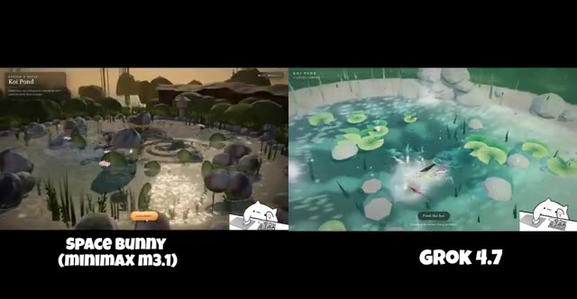
🔍 Agrandir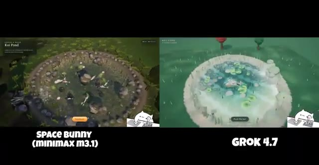
🔍 AgrandirEnsuite, vous regardez Grok 4.7. Il a un aspect beaucoup plus épuré et stylisé avec cette eau bleu vif, des nénuphars, des rochers et des arbres autour de l'étang. Mais voici la partie intéressante. Alors que la vidéo passe par différentes vues, les deux modèles essaient de maintenir la même scène globale tout en ajoutant plus de détails.
Interface & Outils : Écran partagé comparant deux modèles de génération vidéo par IA (Space Bunny MiniMax M3.1 à gauche et Grok 4.7 à droite), avec un widget animé d'un chat pianiste en bas à droite.
Contenu textuel & Code : Texte affiché : "Koi Pond", "SPACE BUNNY (MINIMAX M3.1)", "GROK 4.7", "Feed the koi".
Action / Démonstration : Comparaison comparative des performances de rendu visuel de deux IA génératrices de vidéo à travers différents angles de caméra et plans successifs.
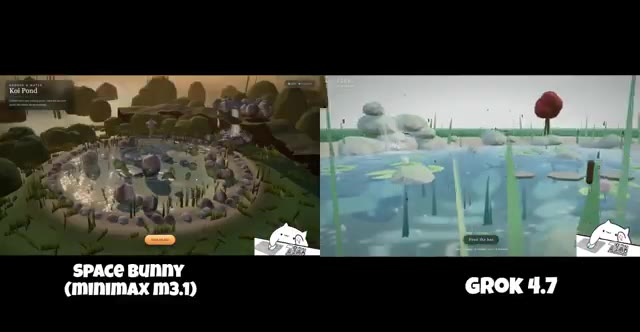
🔍 Agrandir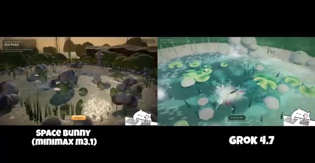
🔍 Agrandir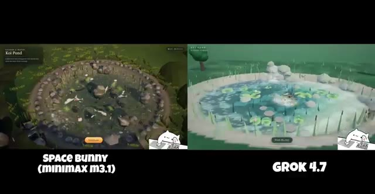
🔍 AgrandirSpace Bunny devient particulièrement intéressant quand on zoome sur l'étang. On commence à voir des poissons individuels, des rochers, des plantes, et tous ces petits détails environnementaux intégrés dans la scène. Et c'est exactement pourquoi je pense que cette fuite mérite qu'on y prête attention. Nous voyons un modèle non publié testé sur une tâche qui lui demande de générer un environnement entier d'apparence interactive à partir d'une simple instruction.
Interface & Outils : Écran comparatif vidéo divisé en deux fenêtres verticales affichant des environnements virtuels 3D interactifs ("SPACE BUNNY (MINIMAX M3.1)" à gauche et "GROK 4.7" à droite).
Contenu textuel & Code : Textes visibles à l'écran : "SPACE BUNNY (MINIMAX M3.1)", "GROK 4.7", "Koi Pond", et un petit widget animé de chat en bas à droite.
Action / Démonstration : La caméra effectue un zoom progressif vers l'étang pour révéler les détails des poissons, des rochers et de la végétation.
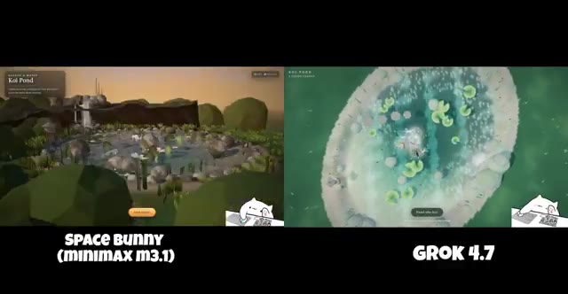
🔍 Agrandir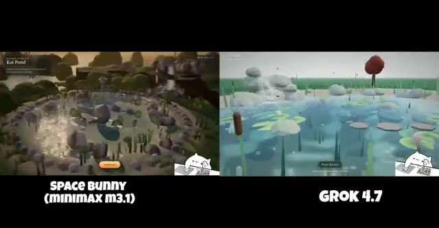
🔍 Agrandir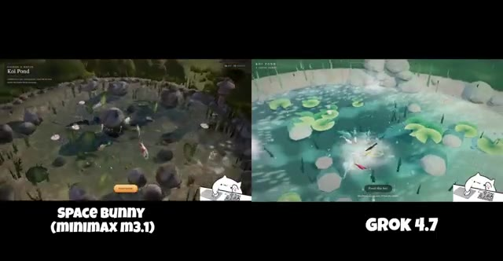
🔍 AgrandirEt selon la publication sur X, ce point de contrôle s'est également amélioré par rapport aux tests précédents. Donc s'il s'agit vraiment d'un premier aperçu du prochain modèle de Minimax, ils ont peut-être préparé du très lourd. Mais évidemment, une comparaison sur X ne suffit pas pour déclarer un vainqueur. sur X a décidé de donner à Space Bunny et Astra exactement le même prompt, en un seul essai, sans modification de prompt entre les deux. La tâche ? Construire un jardin japonais détaillé de style voxel en Three.js avec une pagode, de minuscules villageois, un dragon volant et des éléments interactifs. Et regardez simplement les résultats. Sur le
Interface & Outils : Navigateur web affichant le réseau social X (anciennement Twitter) avec des publications de test comparatif d'intelligences artificielles.
Contenu textuel & Code : Texte de publication X : "Build a detailed voxel-style Japanese garden in Three.js, with a pagoda, tiny villagers, a flying dragon and interactive details. - space bunny took about 45 minutes (free) - astra took about 15 minutes and cost $4.24". Labels vidéo : "SPACE BUNNY (XHIGH)" et "GPT-6 ASTRA (VERY HIGH)".
Action / Démonstration : Le créateur présente des publications sur X comparant les performances et les rendus de deux IA génératives (Space Bunny et Astra/Grok) sur une tâche de programmation 3D en Three.js.
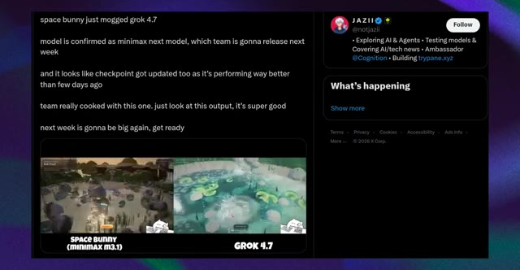
🔍 Agrandir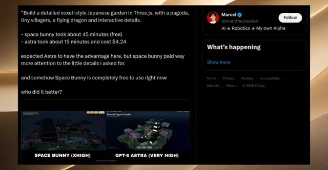
🔍 Agrandir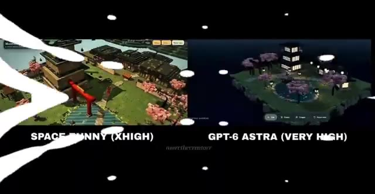
🔍 Agrandirà gauche, nous avons Space Bunny. À droite, Astra. Space Bunny adopte une approche beaucoup plus vaste ici. Vous avez la grande pagode centrale, la porte torii rouge, des cerisiers en fleurs, des sentiers, de l'eau et de multiples structures réparties dans tout l'environnement. Astra opte pour une composition sensiblement différente. Il crée un jardin plus sombre, aux allures nocturnes, avec une pagode et des bâtiments entourés de cerisiers en fleurs et un étang central. Et honnêtement, les deux résultats sont impressionnants pour différentes raisons. Mais il y a un autre détail ici qui, selon moi, est vraiment important.
Interface & Outils : Interface de comparaison vidéo en écran partagé affichant deux environnements 3D interactifs nommés "Moonlit Pagoda Garden" (générés par Space Bunny à gauche et GPT-6 Astra à droite).
Contenu textuel & Code : Textes affichés à l'écran : "Moonlit Pagoda Garden", "SPACE BUNNY (XHIGH)", "GPT-6 Astra (VERY HIGH)", et le filigrane "marinthecreatorr".
Action / Démonstration : Présentation comparative de deux rendus 3D de jardins asiatiques stylisés générés par intelligence artificielle, mettant en valeur leurs différences de composition, d'échelle et d'éclairage.
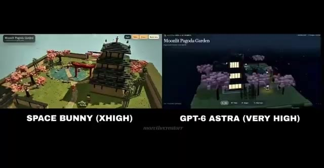
🔍 Agrandir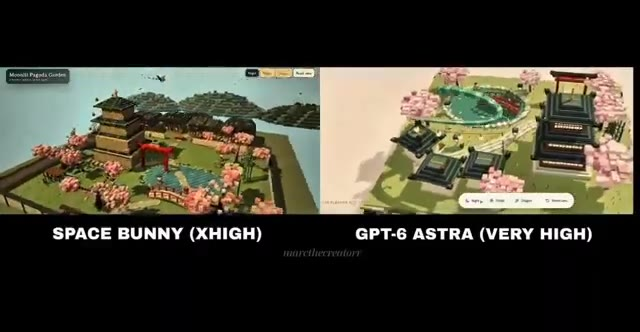
🔍 Agrandir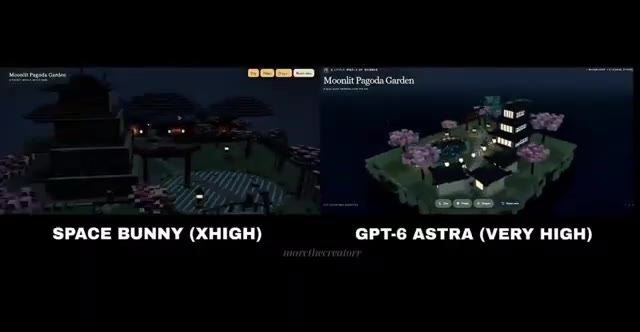
🔍 Agrandir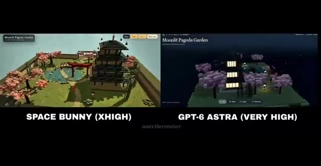
🔍 AgrandirD'après le post sur X, Space Bunny a pris environ 45 minutes pour générer ceci, tandis qu'Astra a pris environ 15 minutes et a coûté 4,24 dollars. Donc oui, Space Bunny était gratuit dans ce test, mais gratuit ne signifie pas plus rapide. Et c'est quelque chose que vous devez absolument garder à l'esprit lorsque vous examinez des comparaisons d'IA virales. Parce que si vous jugez uniquement par le résultat final, vous pourriez regarder Space Bunny et vous dire, waouh, ce truc a surclassé Astra. Mais le temps de génération était environ trois fois plus long dans cet exemple particulier.
Interface & Outils : Interface du réseau social X (Twitter) et lecteur vidéo affichant une comparaison comparative de deux modèles d'IA générative 3D ("Space Bunny" vs "GPT-6 Astra").
Contenu textuel & Code : Texte du post X : "Build a detailed voxel-style Japanese garden in Three.js, with a pagoda, tiny villagers, a flying dragon and interactive details. - space bunny took about 45 minutes (free) - astra took about 15 minutes and cost $4.24...". Légendes des vidéos : "SPACE BUNNY (XHIGH)" et "GPT-6 ASTRA (VERY HIGH)". Titre du projet affiché : "Moonlit Pagoda Garden".
Action / Démonstration : Affichage comparatif d'un post X textuel détaillant les performances, les temps de génération (45 min vs 15 min) et les coûts, suivi d'une démonstration visuelle côte à côte des rendus 3D générés par les deux IA.
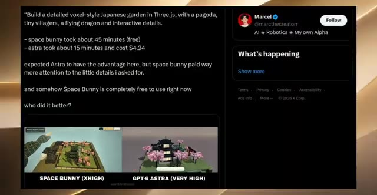
🔍 Agrandir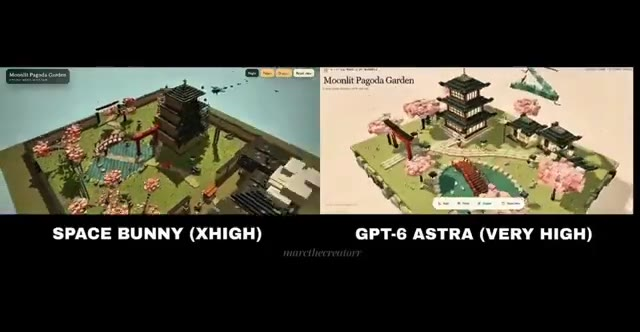
🔍 Agrandir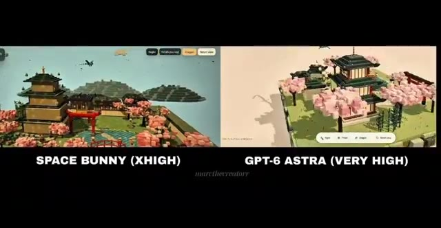
🔍 AgrandirEt il y a une autre chose que j'ai remarquée. Space Bunny semble donner la priorité aux petits détails environnementaux et à la taille globale de la scène, tandis que le résultat d'Astra semble plus compact et visuellement contrôlé. Mais je n'appellerais pas cela une victoire définitive pour l'un ou l'autre modèle. Pourquoi ? Parce qu'il s'agit d'un seul prompt, d'une seule exécution, provenant d'une publication sur X.
Interface & Outils : Interface de comparaison comparative en écran partagé affichant deux rendus 3D isométriques côte à côte, avec des étiquettes textuelles pour chaque modèle.
Contenu textuel & Code : Textes visibles : 'Moonlit Pagoda Garden', 'SPACE BUNNY (XHIGH)', 'GPT-6 Astra (VERY HIGH)', filigrane 'marcthecreatorr'. Éléments graphiques : îlots isométriques stylisés avec pagodes, arbres en fleurs et jardins japonais.
Action / Démonstration : Comparaison visuelle côte à côte de deux moteurs d'IA générative 3D montrant l'évolution des rendus de paysages de pagodes au clair de lune.
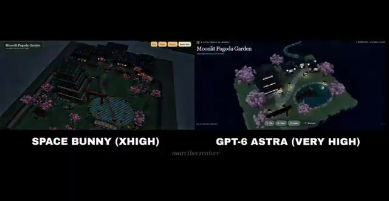
🔍 Agrandir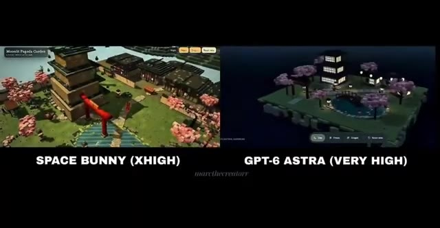
🔍 Agrandir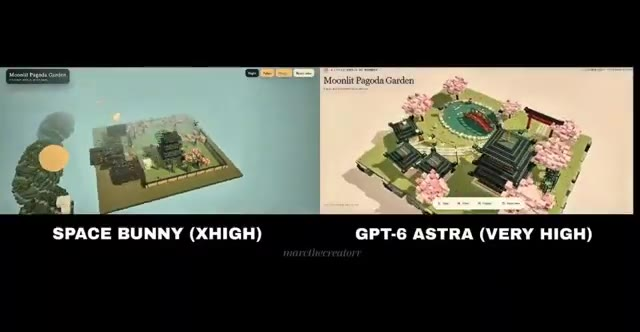
🔍 AgrandirNous n'avons pas de banc d'essai standardisé ici, et nous ne connaissons pas toutes les conditions d'exécution du test au-delà de ce que le créateur a rapporté. Mais ce n'est pas ce qui rend cela intéressant. Ce qui est intéressant, c'est qu'un modèle Minimax non publié, prétendument furtif, produit des résultats de ce niveau avant même que nous ayons vu son lancement officiel.
Interface & Outils : Interface du réseau social X (anciennement Twitter) affichant un tweet de l'utilisateur @marcthecreatorr.
Contenu textuel & Code : Texte du tweet : "Build a detailed voxel-style Japanese garden in Three.js, with a pagoda, tiny villagers, a flying dragon and interactive details. - space bunny took about 45 minutes (free) - astra took about 15 minutes and cost $4.24 expected Astra to have the advantage here, but space bunny paid way more attention to the little details i asked for. and somehow Space Bunny is completely free to use right now who did it better?" et une image comparative montrant "SPACE BUNNY (XHIGH)" et "GPT-6 ASTRA (VERY HIGH)".
Action / Démonstration : Affichage d'une publication sur les réseaux sociaux comparant deux modèles d'IA générative.
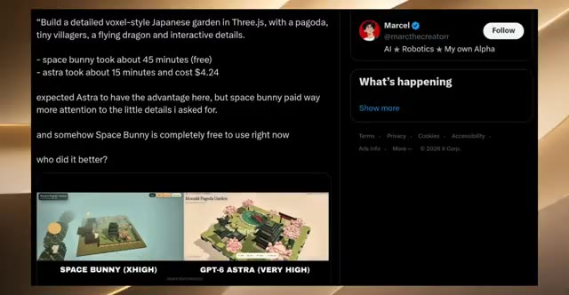
🔍 Agrandir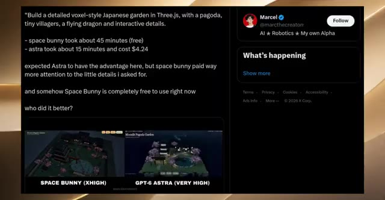
🔍 AgrandirEt si le point de contrôle continue de s'améliorer, Space Bunny pourrait devenir très intéressant. C'est un autre exemple qui a surgi sur X, et le créateur dit qu'il a fait tout ce jeu de bord de mer gratuitement en utilisant Space Bunny. Et ils ne lui ont pas juste donné un prompt textuel avant de s'en aller. Ils ont donné à Space Bunny un prompt plus quelques images, et selon le créateur, le modèle a été capable de comprendre ces différentes entrées et de les transformer en cet environnement.
Interface & Outils : Interface de la plateforme X (anciennement Twitter) affichant des tweets et des captures d'écran de projets de jeux créés avec des modèles d'IA.
Contenu textuel & Code : Texte du tweet de Marcel : "Build a detailed voxel-style Japanese garden in Three.js... space bunny took about 45 minutes (free), astra took about 15 minutes and cost $4.24". Texte du tweet de Siddharth : "This is insane, made this Seaside game for FREE with Space Bunny, the new Stealth Model. gave it a prompt + a few images, it understood different inputs and made this very fast".
Action / Démonstration : Affichage successif de publications de créateurs sur le réseau social X illustrant l'utilisation du modèle Space Bunny pour générer des jeux vidéo à partir de prompts et d'images.
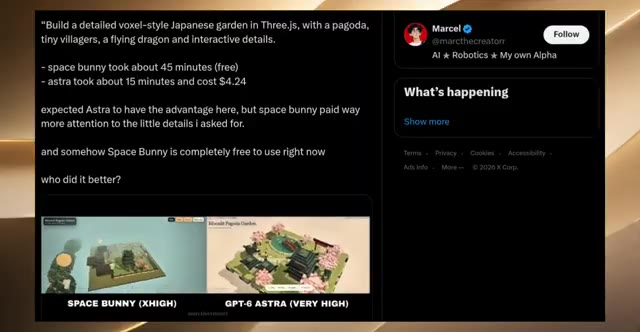
🔍 Agrandir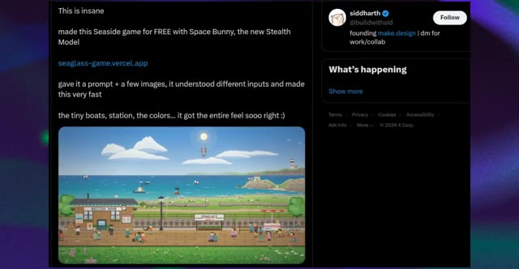
🔍 Agrandir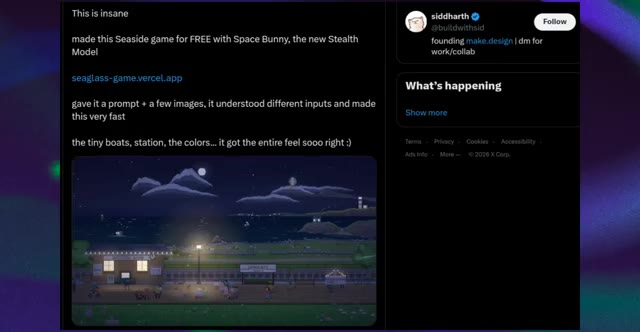
🔍 AgrandirEt honnêtement, regardez tout ce qui se passe ici. Vous avez cet immense océan en arrière-plan, de petits bateaux qui se déplacent, un phare, une île, des nuages, des oiseaux, la voie ferrée, la gare, un train, tout un quai, et tous ces petits personnages qui se promènent. Et c'est vraiment ça qui a attiré mon attention.
Interface & Outils : Animation ou jeu vidéo en pixel art présenté à l'écran.
Contenu textuel & Code : Paysage côtier pixélisé comportant une gare (« WAITING ROOM », « SEAGLASS »), des voies ferrées, un océan avec des bateaux, des nuages, des oiseaux, une montgolfière, un phare sur une île, et de nombreux personnages miniatures animés sur le quai.
Action / Démonstration : La scène visuelle défile ou montre une animation dynamique en pixel art illustrant une journée qui s'écoule (du jour au crépuscule) avec des éléments en mouvement constant.
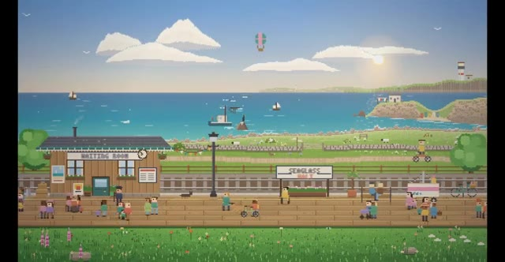
🔍 Agrandir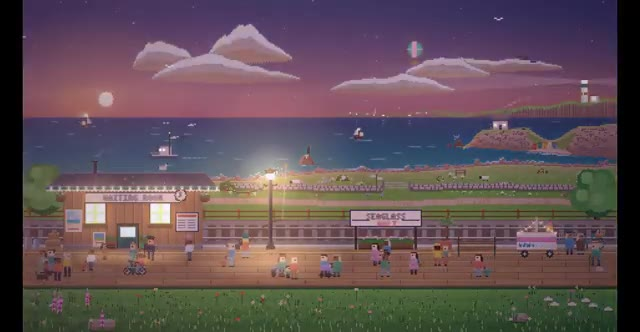
🔍 AgrandirLa scène ne donne pas l'impression d'être totalement statique, au fur et à mesure que la vidéo se lit, le train change de position, les personnages se déplacent autour de la station, des bateaux naviguent sur l'eau, et tous ces petits éléments donnent vie à l'univers. Même les minuscules détails, les vélos, les bancs, le panneau de la gare, les fleurs, les lampes et les PNJ contribuent à donner l'idée qu'il s'agit d'un véritable petit environnement de jeu plutôt que d'une simple capture d'écran générée par IA.
Interface & Outils : Environnement de jeu vidéo en pixel art affiché à l'écran, illustrant une démonstration visuelle de génération de vidéo par IA.
Contenu textuel & Code : Visuels de pixel art représentant une gare nommée "SEAGLASS", une salle d'attente ("WAITING ROOM"), un plan d'eau avec des bateaux, des montagnes, un ciel étoilé ou ensoleillé avec des nuages, et de nombreux personnages (PNJ).
Action / Démonstration : Les images montrent des plans fixes ou animés d'un décor de jeu en pixel art, illustrant le mouvement des personnages, le changement de position du train entre le jour et la nuit, et l'animation de l'environnement.
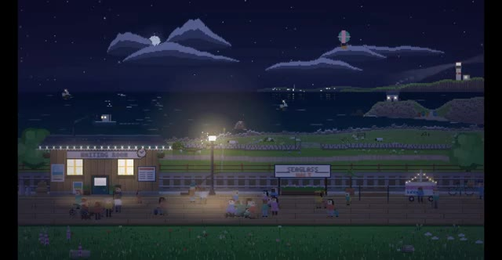
🔍 Agrandir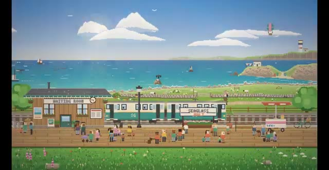
🔍 Agrandir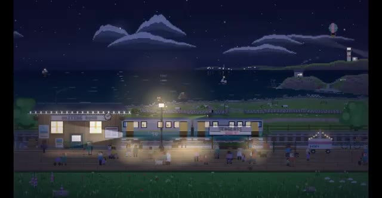
🔍 AgrandirEt visuellement, j'aime vraiment beaucoup la cohérence ici. Ça a cette esthétique de bord de mer en pixel art très spécifique, et Space Bunny ne commence pas soudainement à mélanger des styles visuels complètement différents dans toute la scène. Mais il y a une chose importante qu'il ne faut pas ignorer. Le créateur dit qu'il lui a donné quelques images de référence, donc nous ne pouvons pas dire que Space Bunny a généré chaque idée visuelle complètement à partir de zéro, et nous ne savons pas non plus exactement combien d'itérations ont eu lieu en coulisses.
Interface & Outils : Navigateur web affichant une publication sur la plateforme X (anciennement Twitter).
Contenu textuel & Code : Tweets de Siddharth (@buildwithsid) : "This is insane, made this Seaside game for FREE with Space Bunny, the new Stealth Model. seaglass-game.vercel.app. gave it a prompt + a few images, it understood different inputs and made this very fast. the tiny boats, station, the colors... it got the entire feel sooo right :)"
Action / Démonstration : Affichage successif des visuels du jeu pixel art en plein jour et de nuit, puis du tweet explicatif du créateur détaillant l'utilisation du modèle Space Bunny.
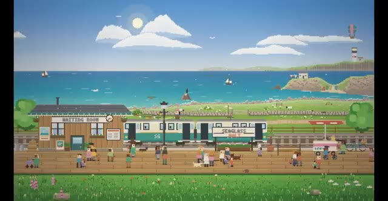
🔍 Agrandir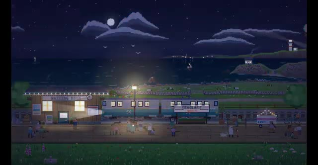
🔍 Agrandir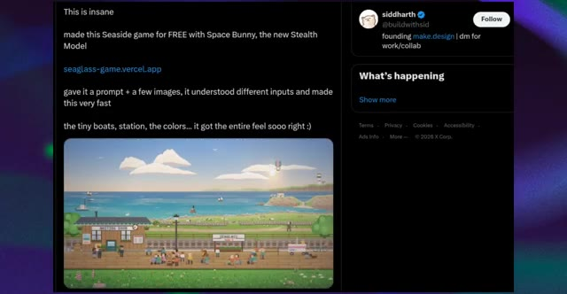
🔍 Agrandir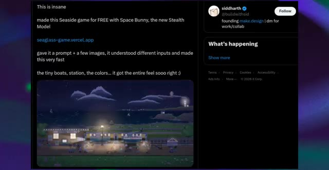
🔍 AgrandirDonc je ne regarderais pas cela en me disant que l'IA vient de créer un jeu complet de qualité commerciale en un seul clic. Ce n'est pas ce que cela prouve. Ce que cela montre, c'est quelque chose de beaucoup plus intéressant. Space Bunny semble capable de prendre de multiples entrées, de comprendre une direction visuelle assez complexe, et de transformer cela en un environnement interactif au style cohérent.
Interface & Outils : Navigateur web affichant une publication sur le réseau social X (Twitter).
Contenu textuel & Code : Texte du tweet : "This is insane, made this Seaside game for FREE with Space Bunny, the new Stealth Model, seaglass-game.vercel.app, gave it a prompt + a few images, it understood different inputs and made this very fast, the tiny boats, station, the colors... it got the entire feel sooo right :)". Profil de Siddharth (@buildwithsid).
Action / Démonstration : Affichage d'une publication sur les réseaux sociaux illustrant la création d'un jeu vidéo par IA, suivi d'un zoom sur le rendu visuel en pixel art du jeu.
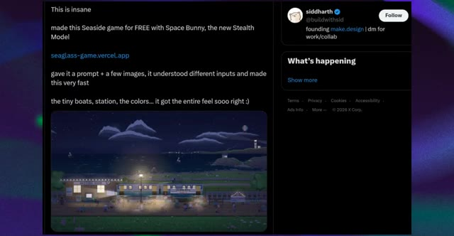
🔍 Agrandir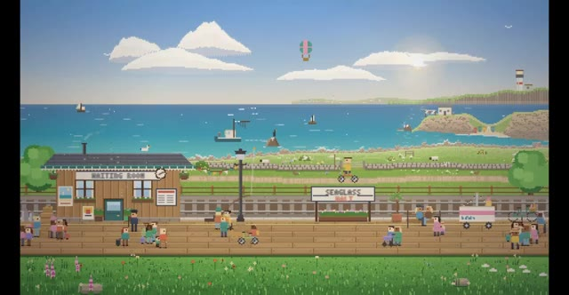
🔍 AgrandirEt selon la publication, le créateur a fait tout cela gratuitement. Comment pourrions-nous oublier le test du pélican ? Celui-ci est juste ridicule. Quelqu'un a donné à Space Bunny une tâche de codage 3D assez spécifique : un pélican qui fait du vélo le long d'une route côtière. Et Space Bunny n'a pas simplement jeté un pélican sur une route aléatoire.
Interface & Outils : Navigateur web affichant le réseau social X (Twitter).
Contenu textuel & Code : Texte de la publication : "This is insane made this Seaside game for FREE with Space Bunny, the new Stealth Model seaglass-game.vercel.app gave it a prompt + a few images, it understood different inputs and made this very fast the tiny boats, station, the colors... it got the entire feel sooo right :)". Deuxième publication : "Drew it? Mysterious model Space Bunny Alpha runs 3D pelican riding a bike, effects absolutely mind-blowing! Build details: Pelican: Orange hat, yellow beak, blue outfit, natural riding pose with full sense of depth, Bicycle: Red frame, spoked wheels, clear pedals, Scene: Coastal highway + lighthouse + sailboat, San Francisco coordinates, Lighting: Morning mist / noon / sunset switchable, color temperature and shadows in sync, Interaction: 38 km/h speed bar + playback controls + radio UI. Anonymous 1M context + strong coding, surprisingly high level of completion. #SpaceBunnyAlpha #OpenCode #3D #PelicanOnTwoWheels #AIPredict #MiniMaxH31".
Action / Démonstration : Le présentateur affiche à l'écran des publications X (Twitter) illustrant les performances du modèle d'IA Space Bunny.
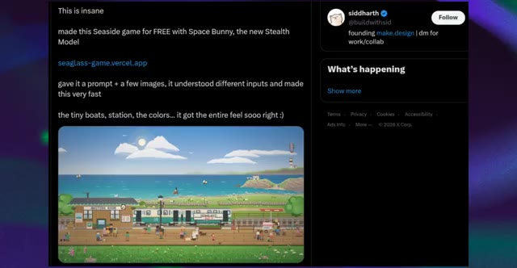
🔍 Agrandir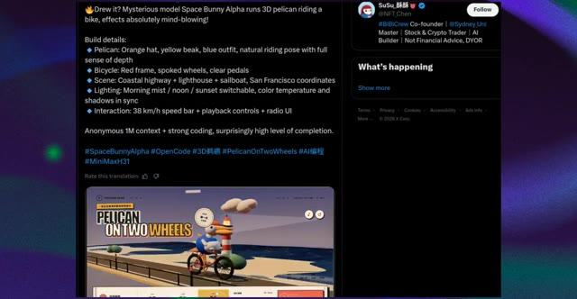
🔍 AgrandirRegardez ce qu'il a réellement construit. Vous avez le pélican avec un chapeau orange, un bec jaune et une tenue bleue, assis sur le vélo avec une pose de cycliste réaliste. Vous avez le vélo rouge, les roues et les pédales, la route côtière, l'océan, le phare, les voiliers, et même la petite interface autour de la scène. Mais ce que je veux vraiment que vous regardiez, c'est ce qui se passe lorsque nous commençons à interagir avec.
Interface & Outils : Application web interactive de type "Postcard Radio" avec interface utilisateur stylisée, boutons de contrôle du temps et de la vitesse, et graphismes 3D.
Contenu textuel & Code : Texte à l'écran : "PELICAN ON TWO WHEELS", coordonnées géographiques, options de moment de la journée (晨雾 / 07:10, 正午 / 13:00, 落日 / 19:30), curseur de vitesse de conduite, et boutons de lecture/pause.
Action / Démonstration : Le curseur de la souris survole l'interface et clique sur différentes options de moment de la journée (passant de midi au coucher du soleil), modifiant l'éclairage de la scène 3D animée.
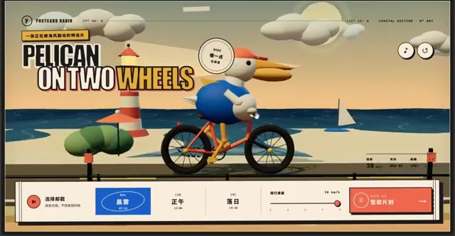
🔍 Agrandir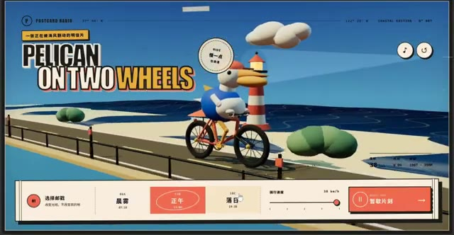
🔍 Agrandir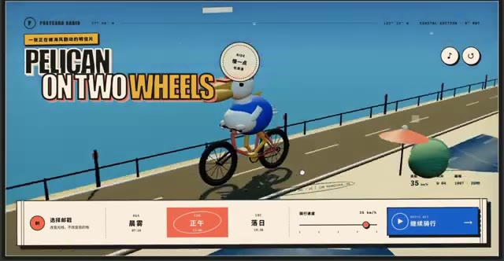
🔍 AgrandirL'éclairage change, on passe d'un look de jour lumineux à cette scène beaucoup plus chaleureuse de type coucher de soleil, puis on revient vers un environnement de jour plus frais. Et le plus important n'est pas simplement que les couleurs changent. Tout l'éclairage de la scène change avec elles. Le ciel, l'océan, la route et les ombres basculent tous ensemble, ce qui donne beaucoup plus l'impression d'une expérience 3D interactive plutôt que d'une collection d'images statiques.
Interface & Outils : Interface web interactive nommée « Postcard Radio » (Coastal Edition) avec des contrôles de temps, de vitesse et de lecture audio.
Contenu textuel & Code : Textes visibles : « Postcard Radio », « PELICAN ON TWO WHEELS », options de temps « 晨雾 » (Brume matinale), « 正午 » (Midi), « 落日 » (Coucher de soleil), curseur de vitesse de déplacement (骑行速度).
Action / Démonstration : Navigation et démonstration d'une interface web interactive simulant un déplacement en vélo le long d'une côte avec modification dynamique de l'éclairage et de l'ambiance visuelle.
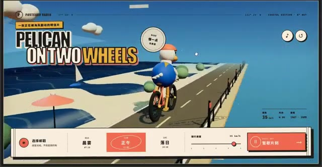
🔍 AgrandirEt puis il y a le contrôle de la vitesse. L'interface montre en fait le pélican se déplaçant à environ 38 kilomètres par heure, avec des commandes de lecture et une interface utilisateur de type radio. Maintenant, je veux être prudent ici. Cela ne signifie pas que Space Bunny a magiquement résolu le développement de jeux 3D. Il y a encore des limitations évidentes. L'environnement lui-même est relativement simple, la géométrie est stylisée, et nous ne savons pas par combien d'itérations le créateur est passé pour obtenir ce résultat final.
Interface & Outils : Interface utilisateur web interactive personnalisée de type radio et post-card (Postcard Radio) avec lecteur et commandes de vitesse, affichée également dans un post sur le réseau social X (anciennement Twitter).
Contenu textuel & Code : Textes visibles : "POSTCARD RADIO", "PELICAN ON TWO WHEELS", options de moments de la journée ("晨雾" - Brume matinale, "正午" - Midi, "落日" - Coucher du soleil), curseur de vitesse ("骑行速度"), et texte du tweet : "Drew it? Mysterious model Space Bunny Alpha runs 3D pelican riding a bike, effects absolutely mind-blowing! Build details: Pelican, Bicycle, Scene, Lighting, Interaction... #SpaceBunnyAlpha #OpenCode #3D".
Action / Démonstration : Le curseur de vitesse et les paramètres de l'interface utilisateur sont manipulés, démontrant le contrôle en temps réel de la vitesse (de 10 à 38 km/h) et de l'éclairage de la scène 3D.
Mais ce n'est pas vraiment le sujet. Ce qui est impressionnant, c'est le nombre de pièces détachées que Space Bunny a réussi à connecter en une seule petite expérience cohérente. Personnage 3D, animation, environnement, contrôles, éclairage, interface utilisateur et interaction. C'est une capacité bien différente de la simple génération d'une jolie page web.
Interface & Outils : Navigateur web affichant une application web interactive 3D ("Postcard Radio" - "Pelican on Two Wheels").
Contenu textuel & Code : Textes en anglais et chinois ("Pelican on Two Wheels", "Postcard Radio"), contrôles de vitesse, curseur de sélection temporelle (晨雾, 正午, 落日) et boutons de lecture.
Action / Démonstration : Navigation et interaction avec une application web 3D intégrant animation, contrôles et interface utilisateur.
C'est fondamentalement l'IA qui passe de « écris-moi du code » à « construis-moi un petit monde interactif ». D'accord, c'est là que Space Bunny devient sérieusement intéressant. Quelqu'un a donné au modèle une idée assez simple. Simuler deux sphères qui se rentrent dedans. Et au lieu de simplement vous donner une animation basique de deux balles qui entrent en collision, Space Bunny a construit ce qui ressemble à une simulation 3D de style ingénierie.
Interface & Outils : Navigateur web affichant une application web interactive 3D, puis un fil d'actualité de réseau social (X/Twitter), et enfin une interface de simulation 3D technique.
Contenu textuel & Code : Sur l'image 1 : Titre "Pelican on Two Wheels", curseur de vitesse à 35 km/h, options de moment de la journée (Brume matinale, Midi, Coucher du soleil). Sur l'image 2 : Texte décrivant le modèle Space Bunny ("a mystery lab dropped a free model called Space Bunny... it built a full 3D engineering sim..."). Sur l'image 3 : Interface noire de simulation 3D avec des grilles de sphères fil de fer (orange et blanche), axes de coordonnées, et infobulles de données physiques ("Contact pressure").
Action / Démonstration : Le créateur montre d'abord une application interactive 3D, puis un post textuel expliquant la création de Space Bunny, et enfin la simulation 3D de deux sphères en collision avec des analyses de contraintes.
Regardez la vidéo. Vous pouvez voir les deux sphères s'approcher l'une de l'autre, les maillages se déformer autour de la zone de contact et la simulation se mettre à jour au moment de la collision. Et il ne s'agit pas seulement d'un joli rendu 3D. Vous avez la visualisation du maillage, la région de contact, la déformation, les informations de charge et de contrainte, ainsi que différents affichages de type ingénierie autour de la simulation.
Interface & Outils : Logiciel de simulation 3D de type ingénierie avec affichage de maillage (wireframe) et de données télémétriques.
Contenu textuel & Code : Maillages filaires de deux sphères en contact, fenêtres de données techniques et coordonnées spatiales (CNT, PRS, RES) dans les coins, graphiques de charge en bas à droite.
Action / Démonstration : Visualisation d'une simulation de collision entre deux sphères montrant la déformation du maillage à l'impact.
Au fur et à mesure que la collision progresse, la géométrie autour du point d'impact change, et vous pouvez voir la zone de contact se compresser et se déformer. C'est un type de tâche complètement différent de la génération d'une page de destination. Vous demandez au modèle de comprendre un scénario physique, de le traduire en code, de créer la géométrie, de simuler l'interaction, puis de visualiser les données résultantes.
Interface & Outils : Interface de simulation scientifique ou d'outil de modélisation 3D avancé avec fenêtres de télémétrie, repères d'axes, grilles de coordonnées et graphiques de données en bas de l'écran.
Contenu textuel & Code : Texte technique et coordonnées en superposition autour de la simulation 3D : codes d'axes, repères de contact, et mini-fenêtres d'analyse de données dans les coins inférieurs.
Action / Démonstration : Affichage et analyse d'une simulation numérique de physique montrant la déformation de la géométrie lors d'un impact.
Et selon la personne qui a publié ceci, cela a même produit un rapport d'ingénierie final à partir de la simulation. Maintenant, voici où je veux être prudent. Je ne prendrais pas cette capture d'écran pour dire soudainement que Space Bunny peut remplacer un logiciel de simulation d'ingénierie. C'est une affirmation audacieuse, et cet exemple à lui seul ne le prouve absolument pas. Nous ne savons pas à quel point la physique sous-jacente est précise, quel solveur ou quelles hypothèses ont été utilisés, ou si les résultats ont été validés de manière indépendante. Mais en tant que démonstration de génération de code, c'est vraiment impressionnant. Parce que Space Bunny ne se contente pas de fabriquer quelque chose qui ressemble
Interface & Outils : Navigateur web affichant un fil d'actualité sur le réseau social X (Twitter).
Contenu textuel & Code : Texte du tweet : « a mystery lab dropped a free model called Space Bunny, i asked it to simulate two spheres crushing into each other. it built a full 3D engineering sim with live mesh, load, strain and a final report, engineers pay for software that does this. this cost $0, OpenCode made it free for one week. download OpenCode, pick Space Bunny, type what you want built, bookmark this before the bunny gets a price tag ». On aperçoit également une image incrustée montrant une simulation filaire 3D de deux sphères en collision.
Action / Démonstration : Affichage d'une publication sur les réseaux sociaux détaillant les capacités de simulation du modèle Space Bunny développé par OpenCode.
comme une simulation d'ingénierie. J'ai le sentiment qu'on va entendre parler de ce modèle très bientôt. C'est Pursuing AI, et je vous dis à la prochaine.
Interface & Outils : Rendu vidéo de synthèse généré par intelligence artificielle (style voxel/pixel art 3D).
Contenu textuel & Code : Un modèle 3D style voxel représentant une île-tortue miniature comprenant un phare, des maisons, des arbres stylisés, avec un dégradé de couleur en arrière-plan.
Action / Démonstration : Affichage d'un rendu vidéo démonstratif illustrant les capacités du modèle d'intelligence artificielle présenté.